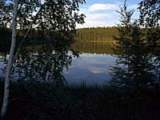
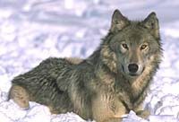

There are many forms of life in the forest. The most obvious is the flora, or plant growth in the forest:
 Large trees of various species, dominate most of the visible forest. Trees often determine the other plant species that will live in the same community. They are accompanied by smaller and shorter trees and tall shrubs filling an intermediate niche in the visible forest. |
Shorter shrubs and bushes may mingle on the forest floor with grasses and other small plants including mosses and lichens. |

Closer to the forest floor are fungi and mold, which extend beneath the surface of the soil. |
Bacteria and other microorganisms accompany fungi and molds in the constant processes of converting matter to useful energy and chemical by-products (decomposition) which various life forms use in day-to-day survival. |

Each of these forms has a place in the growth and development of a forest. In the early stages of a forest, the shrubs, bushes and small plants tend to dominate the forest. As the trees become more established, the ratio changes as the smaller plant life is starved of sunlight, and those plants which do not flourish in poor light die off where the forest canopy obscures the sunlight. |
As a forest matures even further the small plants may die out completely, leaving the forest floor virtually devoid of plants. In these very old forests, the ground-level life forms are generally limited to molds, fungi, mosses and lichens. The trees themselves begin to rot inside as various diseases and insects attack them. Eventually, the forest will succumb to some form of natural death and regenerate with new growth. The forest will fall from either forest fire or old age. |
Of course in today's forests there is an added regenerative influence to be found in forest industry harvesting, which can be just as devastating as a forest fire. But regardless of how the forest dies, new forest almost inevitably follows, as old seeds or new ones carried on the wind or by animals find purchase in the newly cleared and sun-rich soil. |
Animals include
- insects, spiders, amphibians and reptiles
- fish and birds
- small mammals such as squirrels and gophers
- larger mammals like foxes, porcupines, deer, wolves, and others
 There are many varieties of animal life found in any forest, and some species may not be present in every forest. Beavers are not found everywhere because they prefer an environment with a body of water. Wolves are not found in every forest because of scarcity of food and diminished populations in many areas. |